Meu Editor de Arquivos — User Manual
Version 1.1.0
1. Welcome
Meu Editor de Arquivos is a lightweight editor for anyone who works with text, notes, scripts, configuration files, logs and code. It runs on Windows 11, Debian 12 and 13, and Ubuntu 22.04 or newer, and it does not need an internet connection for editing.
What you will find in it:
- tabs for several files at once, with automatic recovery of what you have typed;
- Markdown that opens formatted, with a button to edit the text;
- a JSON viewer where you can open and close parts of the file;
- search and replace in a single file or in a whole folder;
- syntax colors for dozens of languages, snippets and macros;
- a user account to keep files in the cloud and open them on other computers;
- an interface in six languages.
2. Getting to know the screen
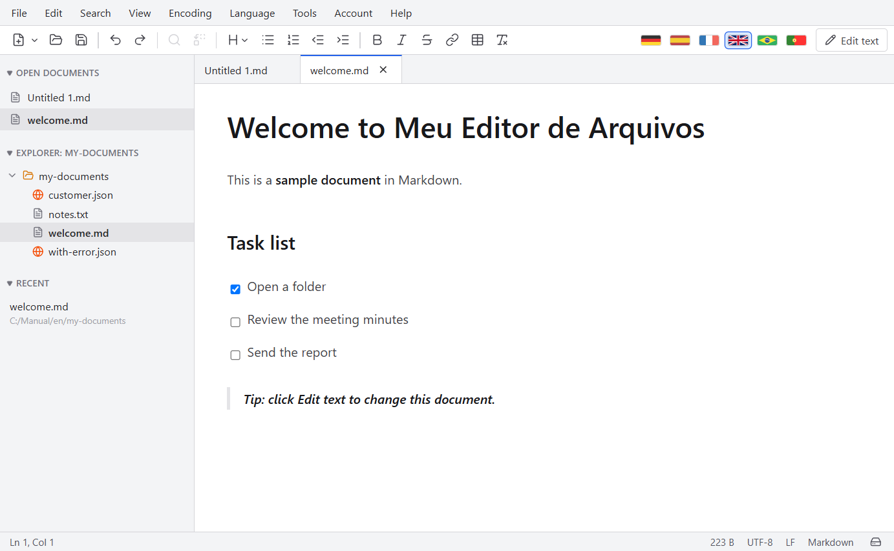
- Menu bar (at the top): File, Edit, Search, View, Encoding, Language, Tools, Account and Help.
- Toolbar: shortcuts for the most common commands. The formatting buttons appear when the document is Markdown. On the right you will find the language flags and the button that switches between preview and editing.
- Sidebar (on the left): the open documents, the explorer for the open folder and your recent files. To hide or show it, use Ctrl+Shift+B.
- Tabs: each document has its own tab. A dot (●) next to the name means there are changes not yet written to the file.
- Editing area: where you read and write.
- Bottom panel: shows the results of searching in files. It opens by itself when you use the search.
- Status bar (at the bottom): cursor line and column, file size, encoding, line ending type and the document's language.
3. Creating and opening files
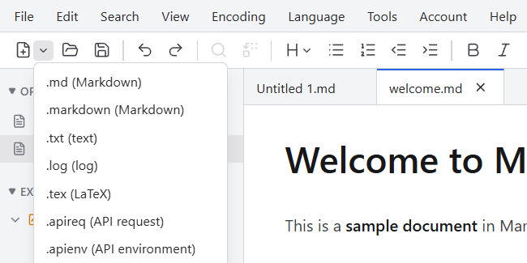
- New document: click New or press Ctrl+N. A new document is Markdown (.md). Click the arrow next to the button to create another type: .md (Markdown), .txt (text), .py (Python) or .sql (SQL).
- Open files: File → Open or Ctrl+O. You can pick several files at once. The limit is 50 MB per file.
- Open a folder: File → Open Folder or Ctrl+Shift+K. The folder appears in the explorer on the sidebar, and a click on a file opens it. Use Close Folder to close it.
- Recent files: the last files you used are listed under Recent on the sidebar. Click one to open it again.
If another program changes a file you have open, the application reloads it by itself. If you have changes of your own in that document that are not yet saved, it asks you first. If the file is deleted or moved, the tab name turns red and struck through.
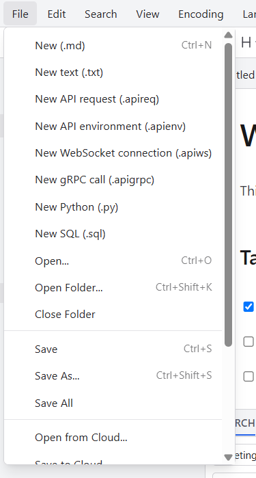
Organizing from the sidebar
Right-click a folder or file in the sidebar, on the computer or in the cloud:
- Rename (folders and files): opens the Rename folder or Rename file window with the current name. Type the new name and click Change. The name cannot be empty or contain
\ / : * ? " < > |. Open tabs of that file, or of the files inside the folder, switch to the new name. - Change folder color (folders): opens the Folder color window with twelve colors, with the current one selected. Pick another and click Change color. Colors are kept on this computer.
- Delete (folders): only available when the folder is empty.
The folder open in the explorer cannot be renamed or deleted from here.
Each file has an icon for its type: documents (.md, .txt, .tex), logs, programming, scripts, web, data and configuration (the same sections as the + button) and a generic icon for the rest.
The sidebar areas (Open documents, Recent, the API client areas and the others) have a triangle to the left of the name: click it, or the name, to expand or collapse the area. To change the order, drag the area name up or down (with the keyboard, Alt+↑ and Alt+↓ with the name focused). The order and the collapsed areas are saved on this computer.
4. Saving and temporary documents
- Save (Ctrl+S) writes the document to its file. For a new document, the application asks for a name and a location.
- Save As (Ctrl+Shift+S) writes a copy under another name or in another place.
- Save All writes every document that has changes.
You do not lose what you typed. A few seconds after each change, the application automatically keeps all open documents, including those that were never saved. This works whether or not you save.
When you close the application, it asks nothing and discards nothing. The next time you open it, your tabs, the folder and the unsaved text come back as they were. Save whenever you want to write to the actual file.
When you close a tab that has changes, the application asks whether to save, not save or cancel. Two notes: the undo history (Ctrl+Z) is not kept between sessions, and automatic recovery keeps up to 100 MB of unsaved text.
5. Editing text
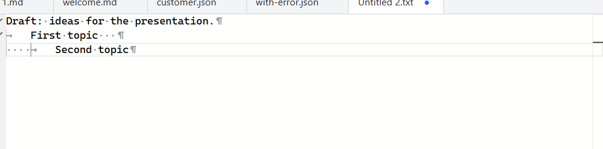
Editing commands are in Edit and display options are in View.
- Undo and redo: Ctrl+Z and Ctrl+Y.
- Find and replace in the document: Ctrl+F and Ctrl+H. To jump to a line, use Ctrl+G.
- Multiple cursors: hold Alt and click wherever you want another cursor, or press Ctrl+D to select the next occurrence of the word.
- Column Selection: hold Shift+Alt and drag the mouse to edit several lines in the same column.
- Lines: Alt+↑ and Alt+↓ move the line; Shift+Alt+↑ and Shift+Alt+↓ duplicate it; Ctrl+/ comments or uncomments it.
- Tidying up: Sort Lines (A-Z), Sort Lines (Z-A), Remove Duplicate Lines and Trim Trailing Whitespace.
- Invisible Characters: shows spaces (·), tabs (→) and the end of each line (¶). It is great for finding stray spaces.
- Word Wrap and Fold All / Unfold All help you read long files.
- Font size: Ctrl++ makes it larger, Ctrl+- makes it smaller and Ctrl+0 restores the default.
- Indentation: in Edit, choose between spaces and tabs and the size (2, 4 or 8 columns).
- Full Screen (F11, in View): shows only the document, filling the whole screen. Press F11 again, or click the button in the top right corner, to leave.
- Toggle Light and Dark Mode (in View): switches between light and dark mode. Until you choose, the app follows the operating system theme; your choice is remembered for next time.
Your display preferences are remembered for next time. The editor's own texts, such as the find box (Ctrl+F) and the command palette (F1), appear in English.
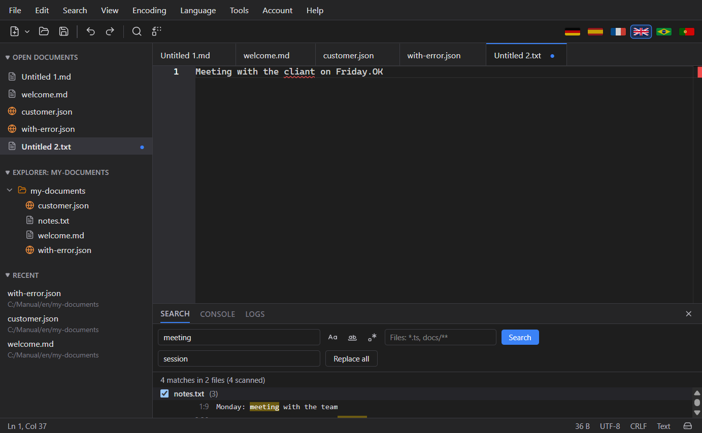
Case, whitespace and line endings
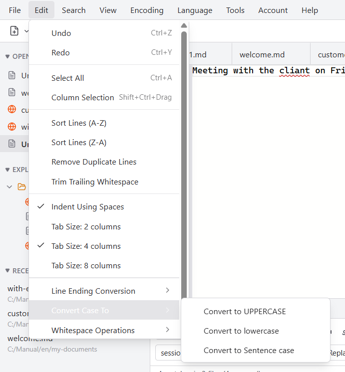
At the end of the Edit menu there are three submenus:
- Line Ending Conversion: converts the document's line endings to Windows (CRLF), Unix (LF) or Mac (CR) format. A conversion marks the document as changed; just save for it to take effect.
- Convert Case To: with some text selected, choose Convert to UPPERCASE, Convert to lowercase or Convert to Sentence case (only the first letter of each sentence is capitalized).
- Whitespace Operations: Trim Trailing Spaces, Trim Leading Spaces and Trim Leading and Trailing Spaces apply to the cursor's line (or to the selected lines). Remove Double Spaces from Document replaces two or more consecutive spaces with a single one in the whole document, without touching the indentation at the start of lines.
MD5, SHA-1, SHA-256 and SHA-512
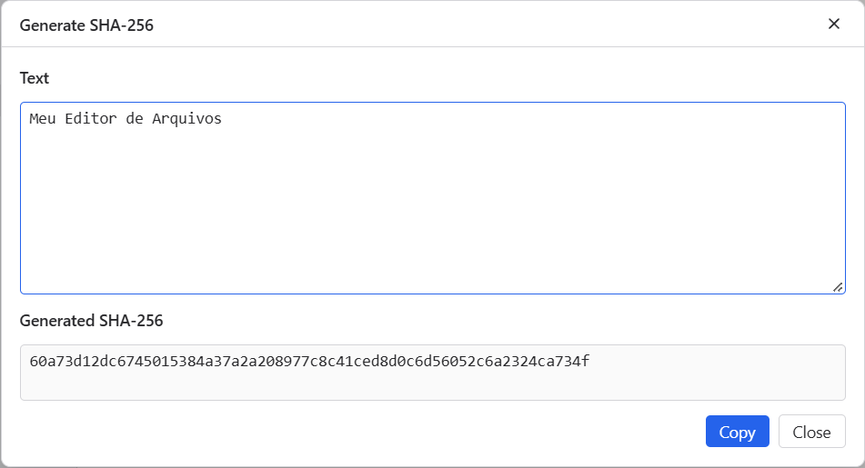
At the end of the Tools menu, each algorithm has two options:
- Generate: opens a window; type or paste the text and the result appears right away, just below. Copy puts the result on the clipboard.
- Generate from Selected Text: computes the result from the text selected in the document and puts it on the clipboard, ready to paste. A notice appears in the status bar.
Terminal
In Tools → Open Terminal, a terminal opens right below the document, in your home folder: PowerShell on Windows and your shell (usually bash) on Linux. Type commands and see the results right there; the document stays open above, and you can drag the divider between them.
- Each click opens another terminal in its own tab (Terminal 1, Terminal 2…). The tab's × closes the terminal; so does the
exitcommand. - With text selected in the terminal, Ctrl+C copies it; with no selection, Ctrl+C interrupts the running command. Ctrl+V pastes.
- While the cursor is in the terminal, keys go to it (Ctrl+W, Ctrl+R…) instead of the app's shortcuts.
- Terminals do not come back the next time you open the app.
Spell checker
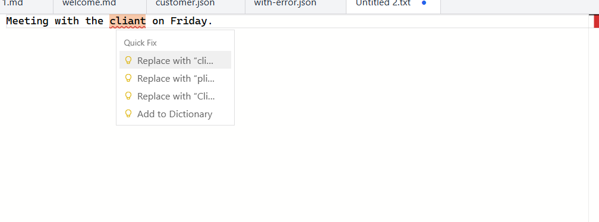
In Markdown, text (.txt) and LaTeX documents, words that are not in the dictionary are underlined in red. Code, links, addresses, acronyms and text between backticks are not checked, and log and CSV files are left out.
- Place the cursor on the word and press Ctrl+. (or right-click and choose Spelling Suggestions) to see the suggestions. Pick one to replace the word.
- Add to Dictionary makes the word accepted from then on, in every language.
- Tools → Check Spelling (or F7) turns checking on and off.
- The checker uses the interface language. To check in another language, choose one of the Spelling: Deutsch, Spelling: English… options in Tools → Spelling Language — there are German, Spanish, French, English, Brazilian Portuguese and European Portuguese dictionaries. Spelling: interface language goes back to following the interface.
The dictionaries ship with the application, so the checker works offline.
6. Markdown
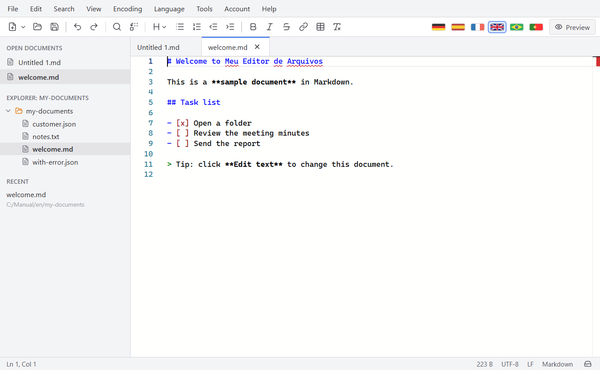
Markdown files (.md) open formatted, and you can keep writing directly in the formatted text. The toolbar applies formatting at the cursor or to the selection: headings, bulleted list, numbered list, indent, bold (Ctrl+B), italic (Ctrl+I), strikethrough (Ctrl+Shift+X), link, table and clear formatting. Ctrl+Z and Ctrl+Y undo and redo.
To see and edit the Markdown source, click Edit text (or press Ctrl+Shift+E); to go back to the formatted text, click Preview. The formatting toolbar works in both modes.
When you edit the formatted text, the Markdown is rewritten in a standard style (for example, lists with -). Documents that contain HTML are read-only in this mode so the HTML is not lost: edit them with Edit text. To open a link in the browser, use Ctrl+click. Images appear as a label with their name, and their address is kept in the file.
7. JSON files
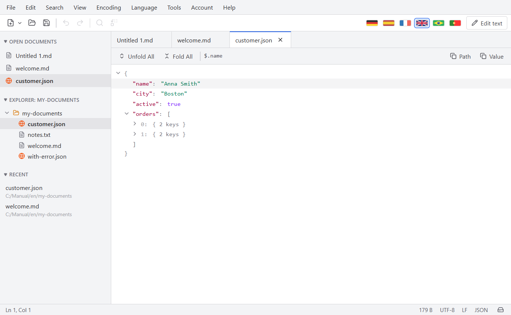
.json files open as a tree. Click an item's arrow to open or close that part. Use Unfold All and Fold All to open or close everything. When you click an item, the bar shows its path, and you can copy the Path or the Value. Very large lists are shown a little at a time, with a button to show more.
To edit, click Edit text. In editing mode, the Format JSON button (Shift+Alt+F) tidies up the file.
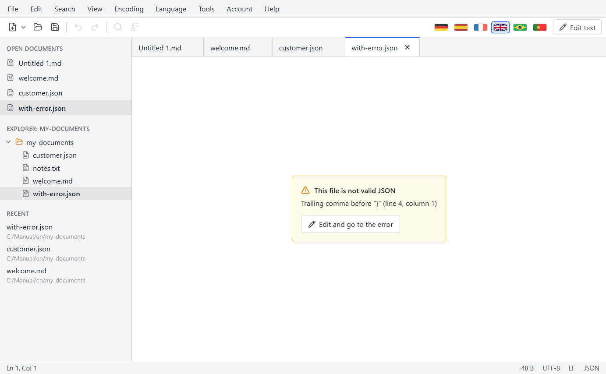
If the file has an error, the application explains the problem and gives the line and column. The Edit and go to the error button opens the editor right at the error.
8. API Client
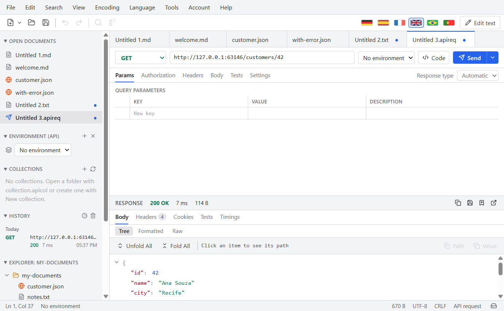
The API Client lets you test web services (APIs): you build a request, send it and check the response without leaving the editor. Each request is a .apireq file that you can save, copy and version like any other file.
Opening it
- Press Ctrl+Shift+A, or use Tools → API Client.
- Or use File → New API request (.apireq).
The document opens in the Builder. To see and edit the file as text (JSON), click Edit text.
Building the request
Choose the Method (GET, POST…) and type the address in Request URL. The details are in tabs:
- Params: the query parameters. What you type in the URL appears here, and the other way round.
- Authorization: how to identify yourself to the service (see below).
- Headers: the request headers.
- Body: the content you send. In Body type you choose JSON, XML, text, HTML, a form, a form with files, a binary file, GraphQL, SOAP or no body.
- Settings: timeout, redirects, proxy, certificates and Verify the TLS certificate. Turn the check off only in test environments.
In any field, use {{name}} to insert a variable from the active environment.
Sending and reading the response
Click Send or press Ctrl+Enter. While the request is running, Esc cancels it. The arrow button next to it offers Send and download to file, which writes the body straight to a file (useful for large or binary responses).
The response shows the status, time and size, with the tabs Body, Headers, Cookies, Tests and Timings. The body can be shown as Tree (to open and close parts of the JSON), Formatted or Raw. Use Save response (.apiresp) to keep the response in an .apiresp file, and Open body in a new tab to edit it as a regular document.
Authorization
In the Authorization tab, pick the Type: API Key, Basic Auth, Bearer Token, OAuth 1.0 or OAuth 2.0. OAuth 2.0 offers the Authorization Code (PKCE), Client Credentials, Device Code and Password (legacy) flows; click Get token and, when needed, the system browser opens so you can authorize access. With Inherit from collection, the request uses the authorization set on the collection.
For passwords and tokens, use a secret variable (see "Environments and secrets"): that way the value is never written to the request file.
Tests and extractions
In the Tests tab:
- Assertions: rules checked on every send, such as "status equals 200", "the body contains a text" or "the JSONPath exists". The result appears in the response's Tests tab.
- Extractions: store a value from the response (a token, for example) in an environment variable, to use in the next requests.
Environments and secrets
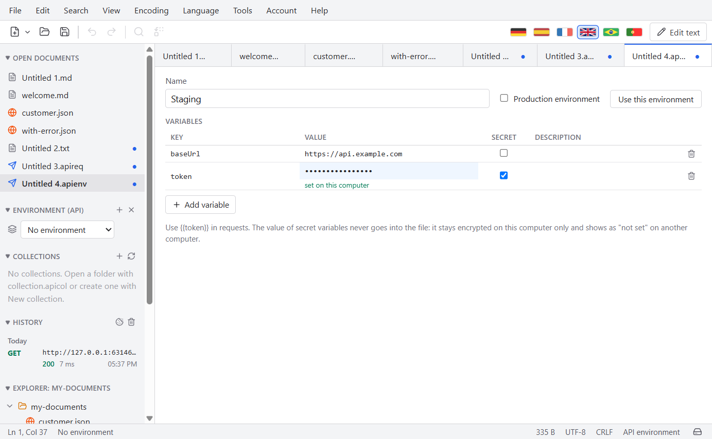
An environment groups variables, such as the address of the test server and of production. Use Tools → API environments (new environment) to create one (an .apienv file) and pick the active one in the Active environment selector.
- Tick Secret on sensitive variables. The value is encrypted on this computer and does not go into the .apienv file.
- Tick Production environment on a production environment: the app asks for confirmation before sending POST, PUT, PATCH and DELETE.
- Received cookies are kept separately per environment; view or delete them in Tools → API cookies.
Collections and history
A collection is a folder with the requests and the .apicol file, which holds the shared authorization and variables. In the sidebar, the Collections section lists the collections in your open folders; right-click to create requests and folders, Run, Export, Document (generates the collection's documentation) and Collection settings.
The History (also under Tools → API history) lists the latest requests you sent, and you can clear it whenever you like.
Importing, exporting and generating code
- Tools → Import requests (curl, Postman, OpenAPI) brings in requests from curl, Postman, OpenAPI/Swagger, Insomnia, HAR and .http files. Click Analyze to see what will be imported and choose Import as collection or Open in tabs. Pasting a curl command into the URL also offers to import it.
- Export saves the collection as Postman, OpenAPI, HAR, .http or curl. Values of secret variables are never exported.
- The Code button opens Generate code and shows the request in several languages, ready to copy.
Running a collection
In Run, choose the requests, the environment, the number of iterations and the delay between them. A data file (CSV or JSON) repeats the run with the values of each row, and Stop on first failure stops at the first failure. Click Run: the result opens as a report (.apirun) with totals, times and each request's tests. With Export the report can be saved as JUnit XML, HTML or Markdown.
GraphQL
In Body type, choose GraphQL to write the Query and the Variables (JSON). With Load schema, the app reads the server's schema, shows the documentation for the types and offers autocomplete.
When the selected operation is a subscription, the Subscribe button appears: the app opens a WebSocket (graphql-transport-ws protocol) to the request address and lists the events it receives below the editor. Click Stop to end it.
SOAP and WSDL
In Body type, choose SOAP, the Version (1.1 or 1.2) and the SOAPAction; Envelope template fills in an empty envelope. To create requests from a service, use Tools → Import requests (curl, Postman, OpenAPI) with the WSDL file: each operation becomes a request with a sample envelope. In tests and extractions, the XPath target reads XML responses (for example, //*[local-name()='Result']).
WebSocket
Use Tools → WebSocket (new connection) to create a connection (a .apiws file). Type the WebSocket URL (ws:// or wss://), the headers and the subprotocols, then click Connect. Write the message (text, JSON or base64 binary) and send it with Ctrl+Enter. The Log shows sent and received messages with time and size; you can filter, pause and clear it. Use Save message to keep messages you send often.
Mock server
A mock server answers in place of the real API, with responses you already know. In the response of a saved request, click Save as example: the app stores the example next to the request. Then right-click the collection and choose Start mock (or Tools → Mock server). Routes come from the saved examples or from an OpenAPI file; adjust each one's status and delay and click Start. The server only answers on this computer unless you tick Listen on the local network, and it stops by itself after 8 hours without calls.
gRPC
Use Tools → gRPC (new call) to create a call (a .apigrpc file). Enter the gRPC server address (host:port), tick Use TLS if the server requires it, and choose the Service source: Server reflection or .proto files. Click Load services, pick the service and method, and use Use template to start the JSON message. Unary and server-streaming calls use Invoke; for client or bidirectional streaming, use Start, Send and Finish sending. Messages, metadata and the status appear in the event list.
Monitors
A monitor repeats a collection run every few minutes and sends a system notification when something fails (and again when it passes). Right-click the collection and choose Monitor (or Tools → API monitors), set the interval, environment and requests, and save. The chart shows each run's time, with failures in red; Run now runs it right away. Monitors only run while the app is open and resume by themselves when you open it again.
Scripts
In the Tests tab, below the assertions, there are two optional JavaScript scripts: Before sending (can change the URL, headers and body) and After the response (can check the response with test and expect and keep values with env.set). The pm alias accepts the basics of Postman scripts. Scripts run isolated, with no network, files or access to the computer, and with time and memory limits; what they write with console.log appears in the response's Console block.
Scripts you did not write (imported or received from someone else) don't run by themselves: the request shows a notice with Trust this collection. Trust applies only on this computer and is dropped if the scripts change.
Security
- Every request leaves from your own computer, through the app; nothing goes through our servers.
- Passwords, tokens and secret values are kept in the operating system's vault (encrypted). If the system has no vault, they stay in memory only and are lost when you close the app.
- These values never go into files (.apireq, .apienv, .apicol), exports, generated code, logs or the cloud. History and cookies also stay on this computer only.
- Only the saved responses and reports of a collection can be synced to the cloud, and only if you turn on Sync saved responses and reports through the cloud.
9. Searching in files
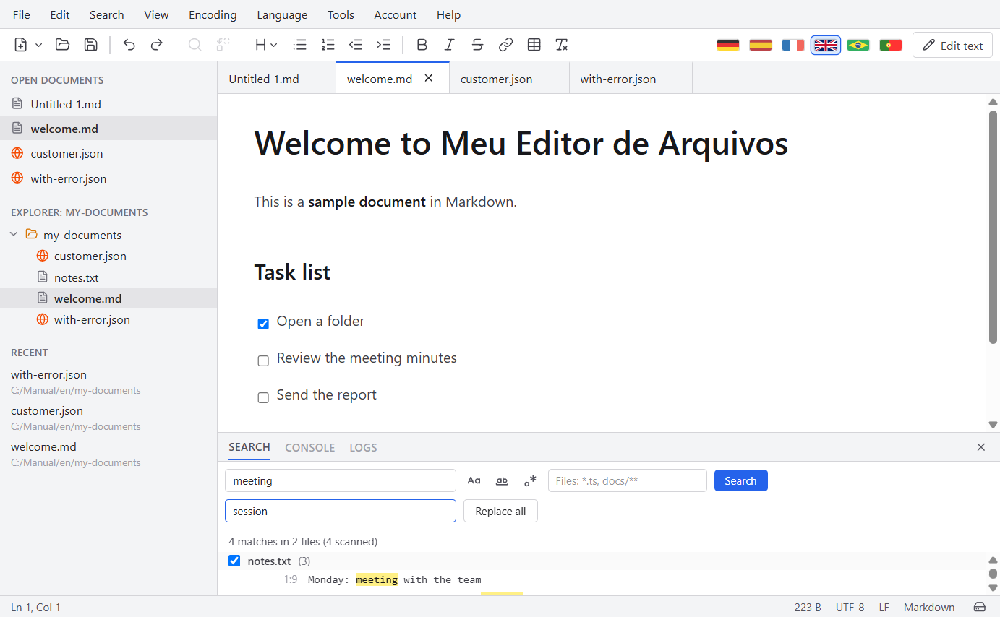
Open a folder and choose Search → Find in Files (Ctrl+Shift+F). The bottom panel opens.
- Type the text and click Search (or press Enter).
- Fine-tune the search with the three buttons beside it: Match case, Whole word and Regular expression.
- To limit the files, write a filter such as
*.md, docs/**. - Results appear grouped by file, with line and column. Click a result to open the file and select the match.
To replace the text, type the new text in the replacement field and click Replace all. Untick the files that must not change. The application asks for confirmation, because the replacement is written straight to the files and cannot be undone from the editor. Open files with unsaved changes are skipped, so you do not lose work.
The search does not enter folders such as node_modules and .git, nor binary files or files larger than 5 MB. It shows at most 5,000 matches at a time.
10. Language, encoding and line endings
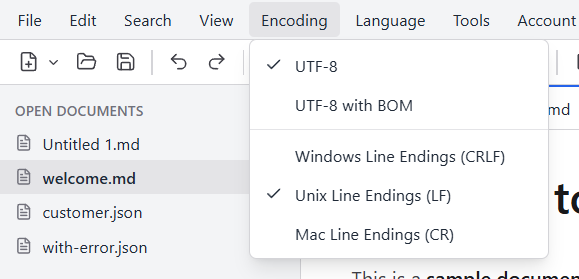
- Language: the application picks the language from the file extension and uses colors to make reading easier. To change a document's language, open the menu and choose another one.
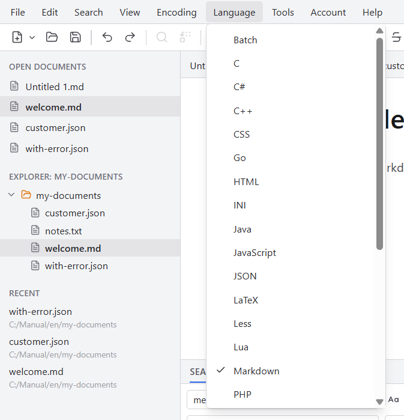
- Encoding: convert the document to UTF-8 or UTF-8 with BOM, and choose Windows (CRLF), Unix (LF) or Mac (CR) line endings. A conversion marks the document as changed; just save for it to take effect.
- Auto Format removes double spaces from the document (line indentation is kept) and formats it in the language's standard style: Python as Python (PEP 8), C and C++ in LLVM style, Java in Google style, C# in Microsoft style, Go with gofmt, and JavaScript, TypeScript, JSON, CSS, HTML, Markdown, YAML, PHP and XML with Prettier; Lua, Shell and SQL too. It works offline. For languages without a formatter (Rust, PowerShell, Batch, LaTeX, INI, TOML and text), only the double spaces are removed, and the status bar says so. If the code has a syntax error, a window shows the line of the error.
- In Python, if the indentation is missing, it is guessed: after a line ending in
:the block opens one level;if,for,while,tryandwithblocks take the next line; adefbody runs until a blank line or areturn. Check the result, because in Python indentation changes what the program does. Quotes stay as you wrote them. Note: double spaces inside quoted strings are removed too. Ctrl+Z undoes it all at once. - Encode/Decode URL encodes the selected text in web address (URL) format (
my pagebecomesmy%20page); if the text is already encoded, it decodes it. In a full address (https://…), the: / ? & = #separators are kept.
The current encoding and line ending appear in the status bar.
11. Snippets and macros
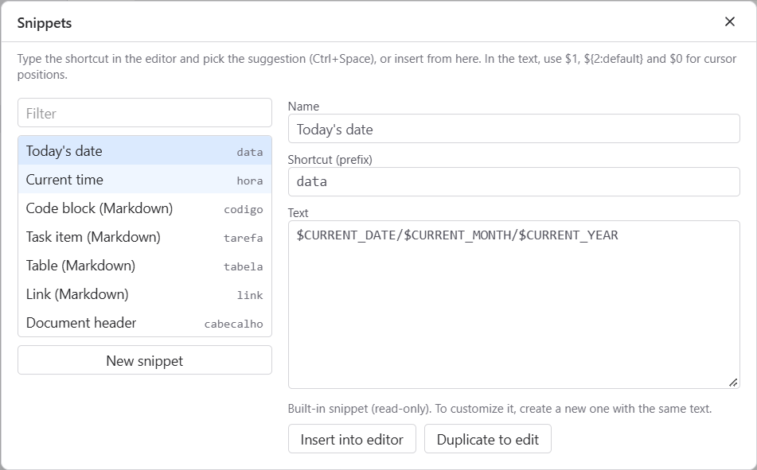
Snippets are ready-made pieces of text. Open Tools → Snippets. The application already includes a few: data, hora, codigo, tarefa, tabela, link and cabecalho. To use one, type its shortcut in the editor and pick the suggestion (or press Ctrl+Space), or click Insert into editor in the window. To create your own, click New snippet and give it a name, a shortcut and the text. In the text, $1 and ${2:default} mark the places where the cursor stops, and $0 is the final position. The application's own snippets cannot be edited, but you can duplicate them.
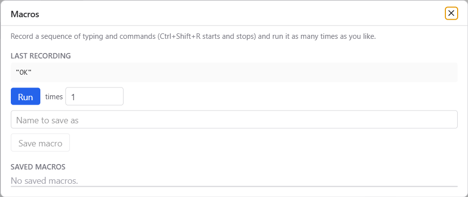
Macros repeat a sequence you performed. Press Ctrl+Shift+R to start recording, type or edit whatever you like, and press Ctrl+Shift+R again to stop. After that, Ctrl+Shift+M runs the last recording. In Macros you choose how many times to repeat it and can save the macro with a name. What gets recorded: typed text, pasted text, the arrow keys, Home, End, Backspace, Delete, Tab, Enter and menu commands. Mouse clicks and Ctrl+Z are not recorded.
12. Account and cloud files
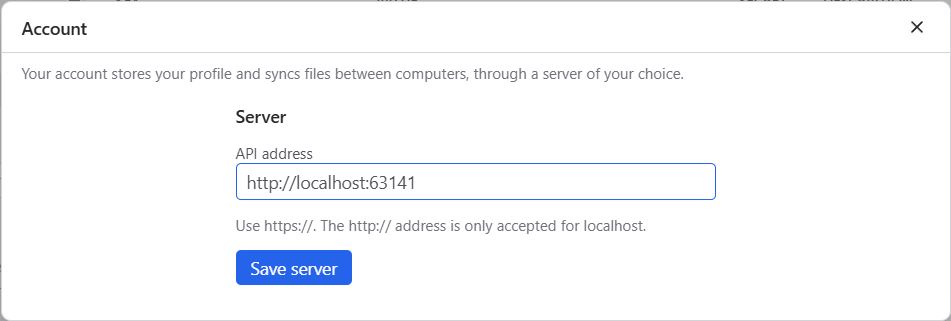
With an account you can keep files in the cloud and open them on other computers. Open the Account menu.
- Server address: the first time, enter the address given to you by your company or administrator. It starts with
https://. - Create an account: click Create an account and fill in your email, name and a password of at least 10 characters.
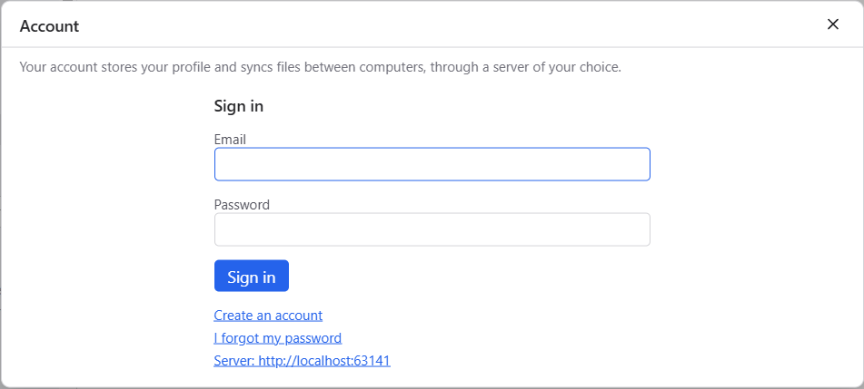
- Sign in: use your email and password. If you forget the password, click I forgot my password: you will receive a code by email and can choose a new password.
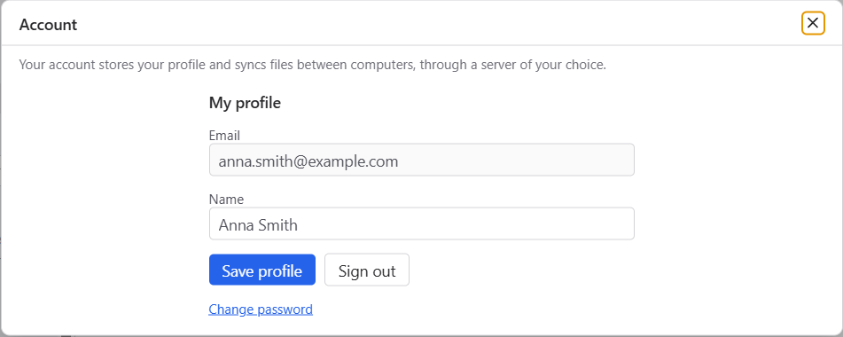
- Profile: in Account, open your profile to change your name, change your password or sign out. When you change your password, your other computers have to sign in again.
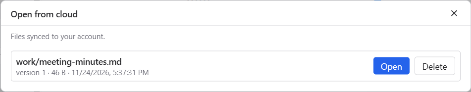
- Save to the cloud: File → Save to Cloud. Pick the path, for example
work/minutes.md. - Open from the cloud: File → Open from Cloud. In the list you can open or delete files. In a document opened from the cloud, Ctrl+S saves back to the cloud.
If the file has changed in the cloud since you last synced, the application warns you and asks whether to overwrite it. Each file can be up to 10 MB. If your system has no credential vault, the application warns you that you will need to sign in every time you open it.
While you are signed in, the status bar shows, to the left of the cloud icon, how much cloud space you use, in MB with two decimal places (for example, 1.25 MB). It adds up all your files in the cloud and the text of documents not yet saved, which is kept so you can continue on another computer. The value changes with each save or deletion. A cloud file open without changes takes no extra space; only unsaved text is kept.
If the same document is changed on two computers before they sync, each computer keeps its own text, and the other version opens in a new tab with "(conflict – other computer)" in its name, so nothing is lost.
13. Languages
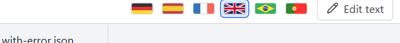
The application is available in German, Spanish, French, English, Portuguese (Brazil) and Portuguese (Portugal). It opens in your system's language; if there is no translation, it opens in English. To switch, click the flag of the language, to the left of the preview button. The change is immediate and remembered for next time. This manual opens in the language currently in use.
14. Keyboard shortcuts
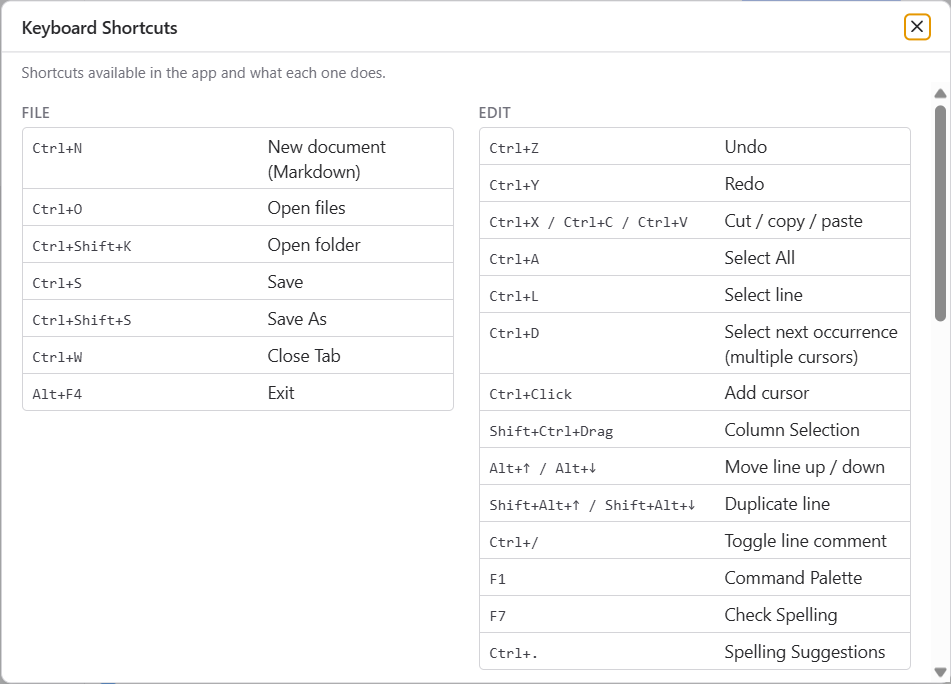
To see the list inside the application, open Help → Keyboard Shortcuts. The available shortcuts:
File
| Ctrl+N | New document (Markdown) |
| Ctrl+O | Open files |
| Ctrl+Shift+K | Open folder |
| Ctrl+S | Save |
| Ctrl+Shift+S | Save As |
| Ctrl+W | Close Tab |
| Alt+F4 | Exit |
Edit
| Ctrl+Z | Undo |
| Ctrl+Y | Redo |
| Ctrl+X / Ctrl+C / Ctrl+V | Cut / copy / paste |
| Ctrl+A | Select All |
| Ctrl+L | Select line |
| Ctrl+D | Select next occurrence (multiple cursors) |
| Alt+Click | Add cursor |
| Shift+Alt+Drag | Column Selection |
| Alt+↑ / Alt+↓ | Move line up / down |
| Shift+Alt+↑ / Shift+Alt+↓ | Duplicate line |
| Ctrl+/ | Toggle line comment |
| F1 | Command Palette |
| F7 | Check Spelling |
| Ctrl+. | Spelling Suggestions |
Search
| Ctrl+F | Find |
| Ctrl+H | Replace |
| Ctrl+Shift+F | Find in files |
| Ctrl+G | Go to line |
View
| Ctrl+Shift+B | Show or hide the sidebar |
| Ctrl+Shift+E | Switch between preview and editing (Markdown, JSON and API requests) |
| F11 | Enter or exit full screen |
| Ctrl++ | Increase Font Size |
| Ctrl+- | Decrease Font Size |
| Ctrl+0 | Reset Font Size |
Markdown and JSON
| Ctrl+B | Bold |
| Ctrl+I | Italic |
| Ctrl+Shift+X | Strikethrough |
| Shift+Alt+F | Format document (JSON) |
Macros
| Ctrl+Shift+R | Start or stop macro recording |
| Ctrl+Shift+M | Run Last Macro |
API Client
| Ctrl+Shift+A | Open the API Client (new request) |
| Ctrl+Enter | Send the request (in an API tab) |
| Esc | Cancel the request in progress (in an API tab) |
15. Frequently asked questions
I closed the application without saving. Did I lose my text? No. Unsaved text is kept automatically and comes back when you open the application again.
Why does Markdown open formatted and I cannot type? That is reading mode. Click Edit text (or Ctrl+Shift+E) to edit.
My JSON shows an error, but it opens in another program. The viewer follows the strict JSON standard: it does not accept a trailing comma, comments or single quotes. Use the error button to go straight to the problem.
The file is large and will not open. The limit is 50 MB per file.
I cannot sign in or save to the cloud. Check the server address and your internet connection. If the message says the session has expired, sign in again.
How do I see the application version? In Help → About Meu Editor de Arquivos.
16. About and support
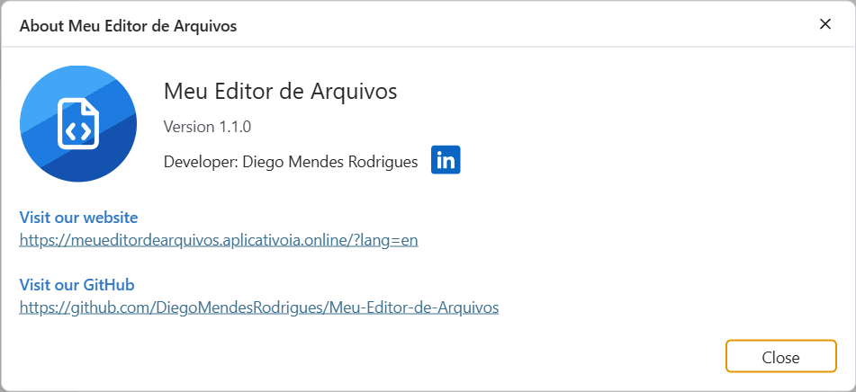
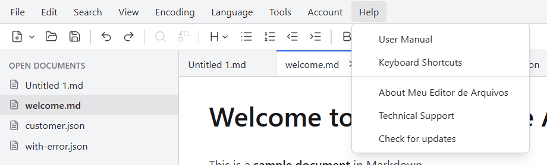
Meu Editor de Arquivos was developed by Diego Mendes Rodrigues. The Technical Support item in the Help menu is not available in this version yet.